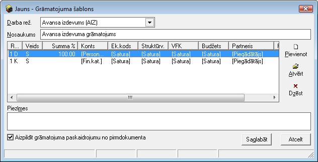

Avansa izdevums¶
Avansa izdevums noformē attaisnojošos izdevumus Avansu norēķinu personām. Avansu izdevumu dokumenti tiek saglabāti Avansa izdevumu žurnālā . Avansa izdevumu dokumenti tiek piesaistīti avansu norēķiniem, lai nodrošinātu datu uzskaiti Avansu norēķinu personām.
Jauna Avansu izdevuma pievienošana¶
Jaunu Avansa izdevumu iespējams pievienot Avansu norēķinam, Avansa norēķina formā, sadaļā Izdevumi, nospiežot pogu “Pievienot” vai arī izvēloties dokumenta veidu Avansa izdevums .
Veicot vienu no iepriekš minētajām darbībām, tiks atvērts jauns logs:

Avansa izdevuma Virsraksta aizpildīšana¶
Lai aizpildītu Avansa izdevuma Virsrakstu, nepieciešams:
1. Laukā Persona, izvēlēties Avansu norēķinu personu no saraksta:
 Ja Avansa izdevuma dokuments tiks sagatavots,
izmantojot iespēju pievienot jaunu Avansa izdevumu Avansa
norēķina formā, sadaļā Izdevumi, nospiežot pogu “Pievienot”,
lauks Persona jau būs automātiski aizpildīts no Avansu norēķina
dokumentā aizpildītās informācijas.
Ja Avansa izdevuma dokuments tiks sagatavots,
izmantojot iespēju pievienot jaunu Avansa izdevumu Avansa
norēķina formā, sadaļā Izdevumi, nospiežot pogu “Pievienot”,
lauks Persona jau būs automātiski aizpildīts no Avansu norēķina
dokumentā aizpildītās informācijas.
2. Laukā Dok.Sēr.-Nr. nepieciešams norādīt Avansu izdevuma dokumenta numuru (piem., čeka numuru):

3. Laukā Datums, nepieciešams norādīt Avansu norēķina perioda datumu, un Dok.dat.- avansu izdevuma dokumenta datums:

4. No saraksta izvēlēties nepieciešamo partneri (Piegādātāju), no kura šis izdevumu attaisnojošais dokuments ir saņemts:

5. Norādiet kurš pēc kārtas Avansu norēķinā būs konkrētais Avansu izdevumu dokuments:
6. Paskaidrojuma laukā tiek norādīta informatīva informācija par Avansu izdevumu, piem., Komandējuma izdevums.
Avansa izdevumaSatura aizpildīšana¶
Lai aizpildītu Avansa izdevuma Saturu, dokumenta satura daļā
nepieciešams nospiest  un tiks atvērts
operācijas satura logs, kurā nepieciešams aizpildīt satura ierakstus
(uzņēmumā izmantotās dimensijas) un norādīt satura ieraksta summu:
un tiks atvērts
operācijas satura logs, kurā nepieciešams aizpildīt satura ierakstus
(uzņēmumā izmantotās dimensijas) un norādīt satura ieraksta summu:

Dokumenta saturs var sastāvēt no vairākiem
satura ierakstiem, kas kopsummā veido Dokumenta Virsrakstā norādīto
summu.Pievienot nākamo satura ierakstu iespējams, satura daļā
nospiežot pogu .
Avansa izdevumagrāmatošana¶
Avansu norēķinos tiek grāmatoti avansu izdevumu dokumenti – tiek kontēts katrs naudas izlietojumu dokuments (čekas, bankas kvīts utt.) atsevišķi. Avansu izdevuma grāmatojums tiek veidots kā atsevišķs dokuments – kontējums. Grāmatojums ir saistīts ar avansu izdevumu dokumentu.
Avansa izdevuma iespējams grāmatot no atvērta Avansu izdevuma dokumenta vai izvēloties (iezīmējot)dokumentu Avansa izdevumu žurnālā .
Lai iegrāmatotu Avansu izdevumu, dokumentu nepieciešams Apstiprināt,
nospiežot rīku joslā pogu  .
.
Apstiprinātu dokumentu ir iespējams grāmatot, nospiežot rīku joslā
pogu  .
.
Grāmatojumā jāizvēlas grāmatojumu šablons – shēma, kā tiks iekontēta pirmdokumentā sagatavotā informācija:

Grāmatojumu var izveidot arī, pievienojot nepieciešamos kontējumus ar komandu Pievienot. Grāmatojot avansu izdevumu dokumentus, grāmatojumā ar šablonu palīdzību automatizēti tiek pārnesta visa informācija, ja ir pareizi aizpildīts pirmdokuments un izveidots grāmatojumu šablons.
Instrukcija - Dokumentu grāmatošanas principi
Pievienotā Avansa izdevuma labošana¶
Labojumus saglabātajā dokumentā iespējams veikt atverot Avansa
izdevuma dokumentu, kurš pieejams apskatei/labošanai:doc:Avansa
izdevumu žurnālā<746> vai arī atverot to Avansu norēķinu
, uz kuru šis Avansu izdevums attiecas un Avansu norēķina sadaļā
Izdevumi, atverot nepieciešamo Avansa izdevuma dokumentu. Lai veiktu
labojumus Avansu izdevumā, dokumentu nepieciešams atvērt, izmantojot
rīku joslas pogu  (ALT+A), un atvērtajā
ierakstā iespējams veikt nepieciešamos labojumus. Pēc labojumu
veikšanas, veiktā izmaiņas iespējams
(ALT+A), un atvērtajā
ierakstā iespējams veikt nepieciešamos labojumus. Pēc labojumu
veikšanas, veiktā izmaiņas iespējams  vai
vai
 .
.
- scale
100%
- scale
100%
- scale
100%
- scale
100%
- scale
100%
- scale
100%
- scale
100%
- scale
100%
- scale
100%
- scale
100%
- scale
100%
- scale
100%
- scale
100%
- scale
100%
- scale
100%
- scale
100%
- scale
100%